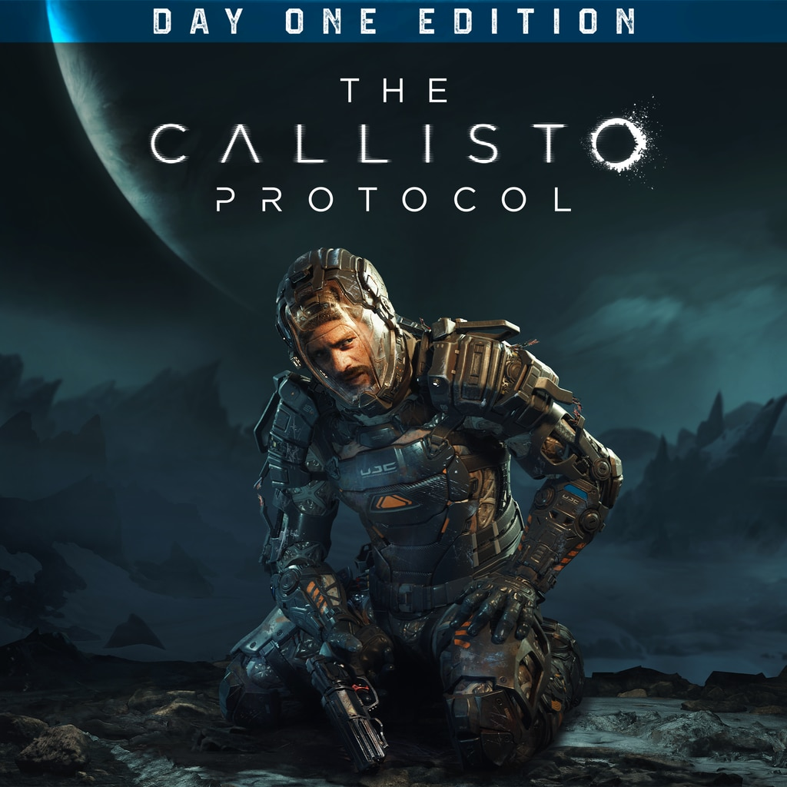
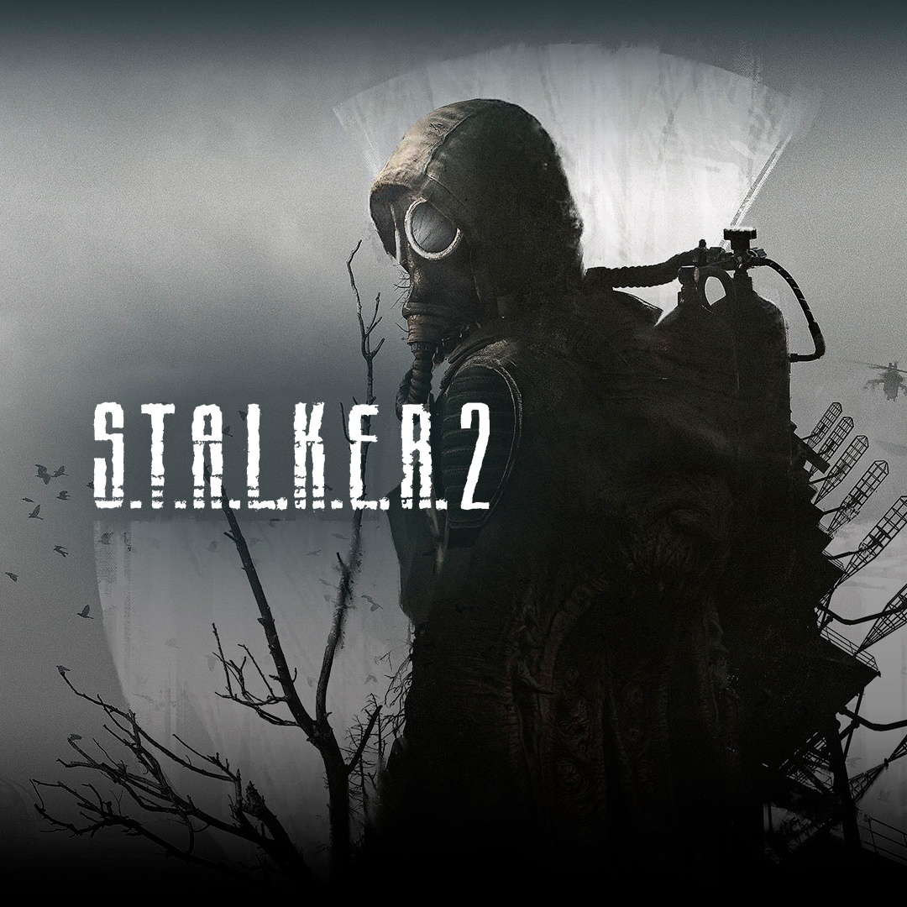

JUEGOS
Calisto Protocol
Es una nueva esperanza en el género del terror. The Callisto Protocol se alza como un faro para convertirse en la referencia del miedo y el pavor. El mítico Glen Schofield regresa tras haber dado forma al éxito de Dead Space, repitiendo una fórmula que nos llevará a una luna de Júpiter, donde nadie oirá nuestros gritos.
Minecraft
El mundo de Minecraft es infinito y se basa en bloques, la inmensa mayoría de ellos con forma de cubo y de las mismas dimensiones. Y sí, decimos bien, infinito, pues podrías empezar a recorrerlo sin llegar nunca jamás al borde; antes se agotará el almacenamiento de tu ordenador. Además de infinito es dinámico. No existen dos mundos iguales, pues cada vez que inicias una nueva partida se crea un mundo nuevo, diferente del anterior. Aunque tu visión es limitada, puedes ir caminando por el mundo para ir descubriendo diferentes cosas: poblados de gente, animales, acontecimientos naturales (volcanes, cuevas, fallas, etc.), y lo más interesante de todo: deberás ir recogiendo materiales para ir avanzando en el juego, construyendo nuevos objetos o mejorando los que ya tengas.

Stalker 2
será un videojuego del género de disparos en primera persona ambientado en un futuro postapocalíptico, el cual se ambientará de nuevo en la Zona, un lugar inspirado en el área de exclusión de la central nuclear de Chernóbil, en la actual Ucrania.
